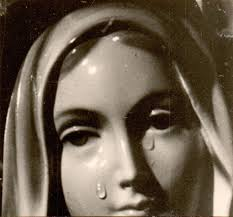

"NOSSA SENHORA DAS LÁGRIMAS"


"A SANTÍSSIMA VIRGEM MARIA SE MANIFESTOU EM SIRACUSA, NA ITÁLIA, DERRAMANDO PRECIOSAS LÁGRIMAS ATRAVÉS DE UMA PEQUENA IMAGEM DURANTE QUATRO DIAS, CURANDO UMA JOVEM SENHORA NO SEXTO MÊS DE GRAVIDEZ. E TAMBÉM ALERTOU O MUNDO DE QUE DEUS NOSSO SENHOR ESTÁ MUITO TRISTE, QUERENDO MAIS MISERICÓRDIA E DIGNIDADE NO TRATAMENTO MÚTUO ENTRE AS PESSOAS, COM MAIS RESPEITO E HONESTO AMOR ".
=ÍNDICE=
 -
DERRADEIRAS PALAVRAS + E-MAIL
-
DERRADEIRAS PALAVRAS + E-MAIL